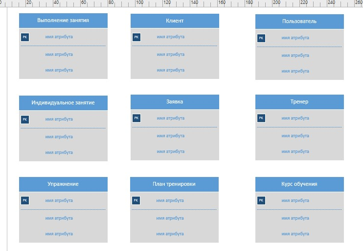
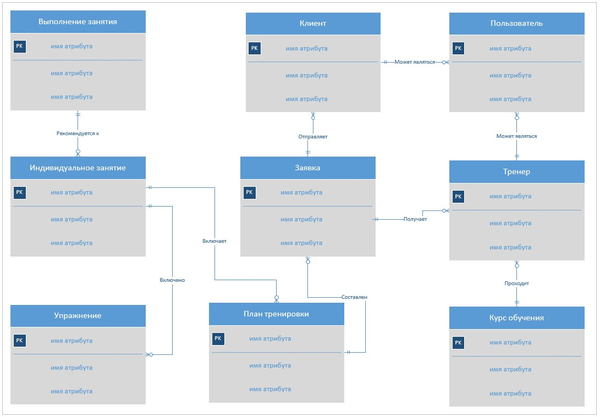
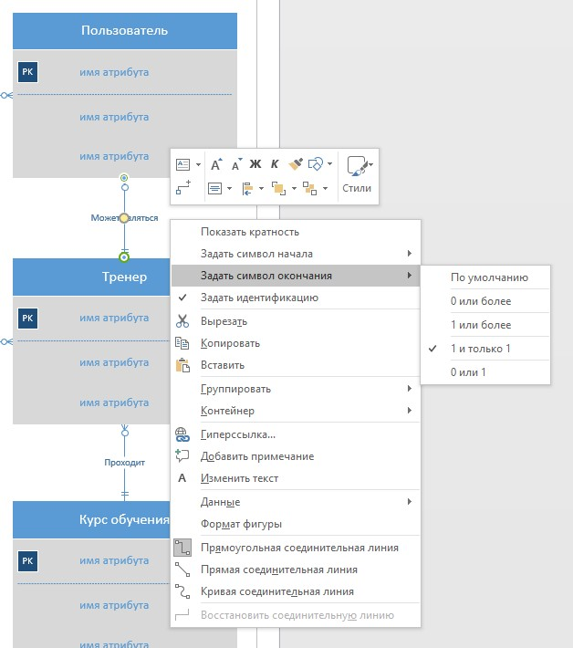
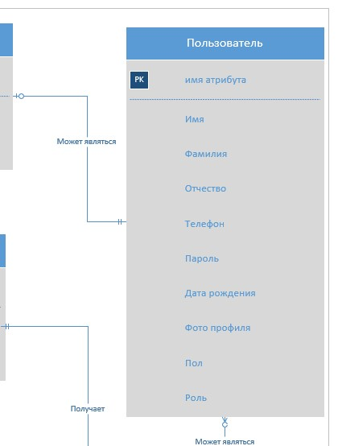
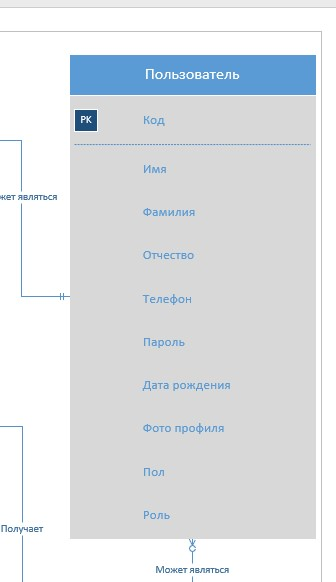

ER-диаграммы (диаграммы сущность-связь)
- В основе ER-диаграмм лежит принцип «рисунок нагляднее текста»
- ER-диаграмма графически представляет сущности (entities) предметной области, свойства (attributes) сущностей и связи (relationship) между ними
- ER-диаграммы делятся на концептуальные и физические. В отличие от физических, в концептуальных ER-диаграммах не учитываются особенности конкретной базы данных. Впоследствии сущности концептуальных ER-диаграмм становятся таблицами, атрибуты — колонками, а связи реализуются путем миграции ключевых атрибутов родительских сущностей и создания внешних ключей
Пример построения ER-диаграммы
Предметная область — фитнес-индустрия. Цель заказчика — разработка платформы для удаленных тренировок. Основные шаги построения ER-диаграммы:
- Добавление сущностей
- Добавление связей и их настройка
- Добавление атрибутов
Важно
В данном занятии ER-диаграмма составляется в Microsoft Visio на основе описания заказчика. Используется тип диаграммы Crow's Food database notation (Кроу ногу)
Добавление сущностей
1. Выделяем сущности в описании заказчика
Важно
Сущность (entity) — класс реальных или виртуальных однотипных объектов, информацию о которых необходимо хранить в базе данных. Пример сущности — «тренер»
2. Добавляем сущности на ER-диаграмму

Важно
На ER-диаграмме сущность изображается в виде прямоугольника, внутри которого содержится имя сущности в форме существительного в единственном числе
Добавление связей и их настройка
1. Изображаем связи на ER-диаграмме

Важно
Связь (relationship) — ассоциация между сущностями. Для облегчения понимания диаграммы следует добавлять названия связей. Пример связи — «тренер получает заявку»
2. Указываем тип связи между сущностями

При определении типа следует учитывать модальность связи: «может» или «должен». Модальность «может» означает, что экземпляр одной сущности может быть связан с одним или несколькими экземплярами другой сущности, а может быть и не связан ни с одним экземпляром другой сущности. Модальность «должен» подразумевает связь не менее чем с одним экземпляром другой сущности. Примеры возможных типов связей представлены в таблице
|
Название типа |
Пример |
Комментарий |
|---|---|---|
|
Один-к-одному |
План тренировки должен быть составлен по одной заявке / По заявке может быть составлен один план тренировки |
Данный тип следует использовать исключительно для связывания различных сущностей (разные сущности должны иметь разные атрибуты) |
|
Один-ко-многим |
План тренировки может включать много индивидуальных занятий / Индивидуальное занятие должно относиться к одному плану тренировки |
Наиболее часто используемый тип связи |
|
Многие-ко-многим |
Тренер может пройти несколько курсов обучения / Курс обучения может быть пройден многими тренерами |
Используется исключительно в качестве временного типа. При дальнейшей разработке данная связь заменяется на две связи типа «один-ко-многим» путем добавления промежуточной сущности |
Добавление атрибутов
1. Выделяем атрибуты в описании заказчика
Важно
Атрибуты предназначены для описания сущности. В приведенном примере они выделены красным цветом шрифта
2. Добавляем атрибуты к сущностям

Важно
Следует учитывать, что не все атрибуты могут быть указаны явно в техническом задании. Например, для определения стажа тренера удобно хранить в базе данных дату его трудоустройства
3. Добавляем ключ к сущностям

Важно
Ключ — это один или несколько атрибутов, уникально определяющих сущность. В данном примере в качестве ключа используется атрибут «код»
Итоги
Итак, вы познакомились с правилами построения ER-диаграммы.